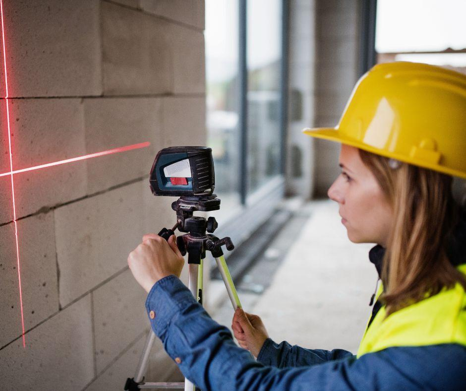
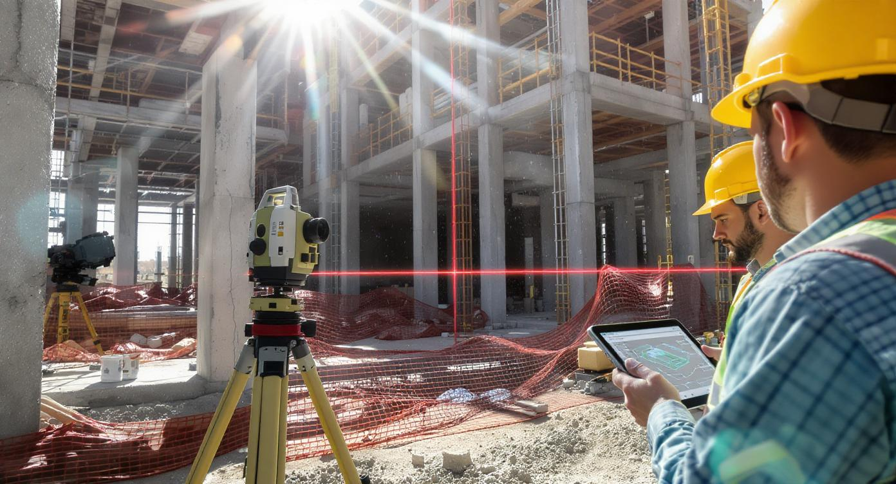
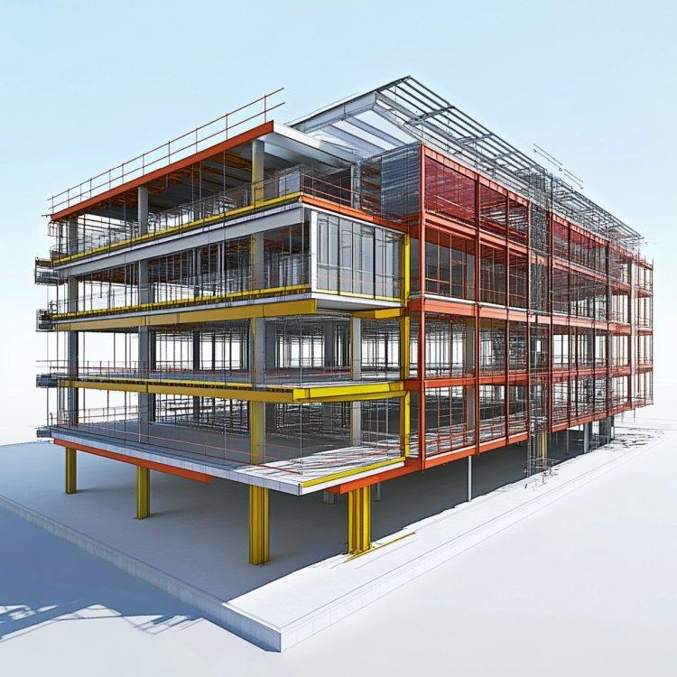
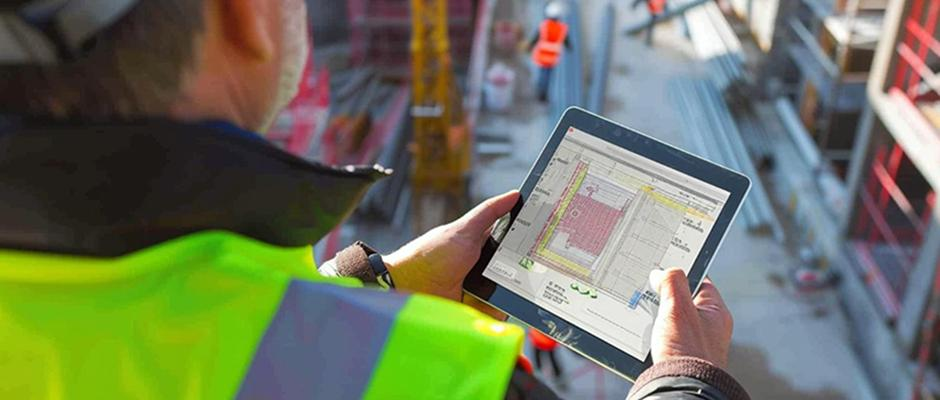

Présentation
Nous intégrons les outils numériques dans les métiers du bâtiment pour améliorer la précision et la qualité des projets.
VG Maçonnerie intègre les technologies numériques, le scan 3D et l’intelligence artificielle au service du bâtiment.
Nous intégrons les outils numériques dans les métiers du bâtiment pour améliorer la précision et la qualité des projets.

L’intelligence artificielle permet d’optimiser les chantiers, analyser les structures et anticiper les contraintes techniques.
Scan 3D, modélisation et suivi digital des chantiers pour une précision maximale.


Génération automatique de devis, rapports et documents techniques grâce aux outils numériques.
Développement du Diagnostic Laser 3D et des outils d’aide à la décision pour les chantiers complexes.
